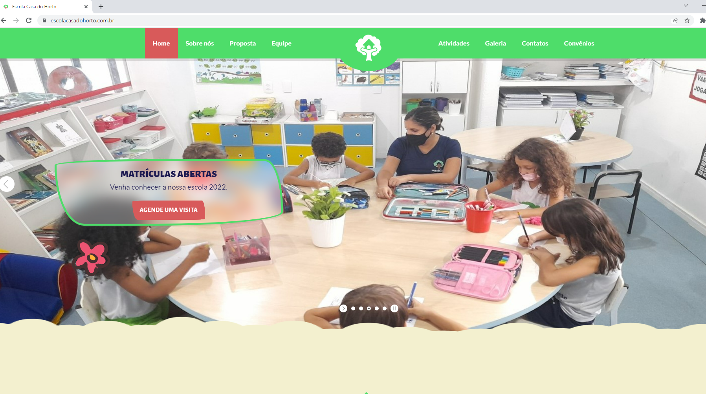

## Site desenvolvido para o cliente - Escola Casa do Horto Educação Bilíngue.
<a href="https://www.https://www.escolacasadohorto.com.br"></a>

## Algumas Tecnologias utilizadas:
<div style="display: inline_block "><br>
    
    
    
    
    
    
    
</div>

##


<!--
**danilovviana/escolacasadohorto** é um repositório ✨ importante pra mim_ ✨ porque este arquivo é a divulgação de um trabalho realizado profissionalmente.